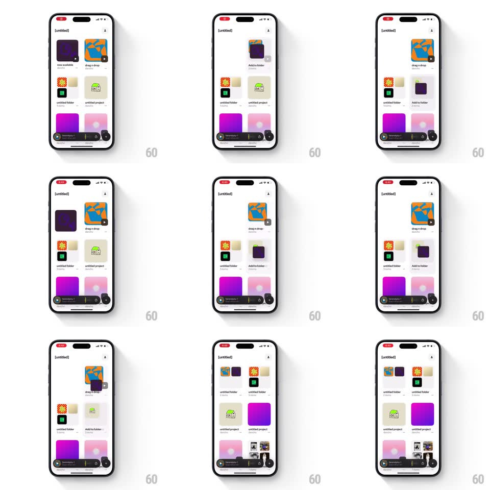

Media
Frame-by-frame

Rebuild this interaction 1:1: [untitled]'s drag-to-merge grid - long-press a project card, drag it onto another card, and the two spring into a single folder card while the grid reflows around them.

Rebuild this interaction 1:1: [untitled]'s drag-to-merge grid - long-press a project card, drag it onto another card, and the two spring into a single folder card while the grid reflows around them. ## Integration Integration: stack-agnostic spec - springs given as stiffness/damping, timed motions as duration + curve; map every value to your framework and animation library of choice. ## Scene A light-gray grid of project cards (artwork thumbnails, titles like "drag n drop", "untitled project") under an "[untitled]" header, with a dark mini-player pill docked above the home indicator. Cards sit on a 2-column layout. ## Motion spec Pattern: springy drag-and-drop card merge. - Long-press: the card lifts - scale 1 to 1.06, shadow deepens (250ms, spring ~360/20) - with a medium haptic; neighboring cards stay put. - Drag: the card tracks the finger 1:1 with slight rotation lag (+-3deg against drag direction); cards it passes over shift aside with layout springs (~380/26) previewing the reorder. - Hover over another card: the target card highlights (border ring + slight scale 1.03) and a dark "Add to folder" pill slides in beneath it (translateY + fade, 180ms). - Drop on the target: both cards fly toward the target slot and collapse into one folder card (bounds spring ~340/22, 350ms, success haptic); the folder card shows stacked thumbnail corners and lands with a soft overshoot bounce. - Drop on empty grid: the card slots into the gap; every displaced card reflows with the same spring, staggered by 20ms in reading order. - Cancel (drag out + release): the card glides back to its origin (spring ~360/24). ## Calibration - Everything is springs - no linear slides; overshoot is subtle (damping never below ~18). - The dragged card renders above all siblings with the deepest shadow; the mini-player never moves. ## Reduced motion Cards fade between positions; drop merge is a quick crossfade. ## Don't miss - The "Add to folder" pill only exists while hovering a valid target - it's the merge affordance, not a button. - Folder cards are distinguishable only by their stacked-corner thumbnails, not chrome or badges.